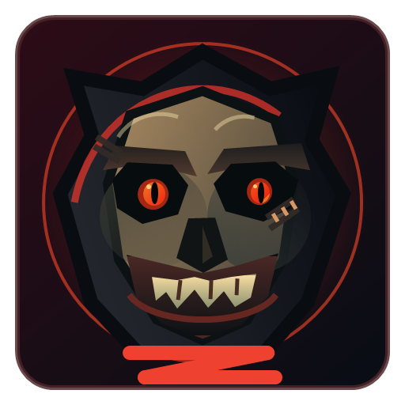

Tek kişilik yapım · Windows
ZOMBİ
ARENA
Silahını kuşan, zombilere karşı dayan ve arenada kendi rekorunu kır. Klasik, poligon ve açık dünya modlarına gir; istersen çevrimiçi lobide arkadaşlarınla buluş.
⬇OYUNU İNDİRWindows uygulaması · EXEİndirilen ZombiArena.exe dosyasını açarak başlat.
🧟 Üç oyun modu
Klasik arena, poligon ve görevli açık dünya.
🔫 Cephanelik
Tabanca, tüfek, pompalı, keskin nişancı ve daha fazlası.
🌐 Çevrimiçi lobi
Online modu ve oyun kütüphaneleri için internet bağlantısı gerekir.
Zombi Arena · Oyun ayrı bir uygulama penceresinde açılır. İlk açılışta oyun kütüphanelerinin yüklenmesi için internet gerekir.